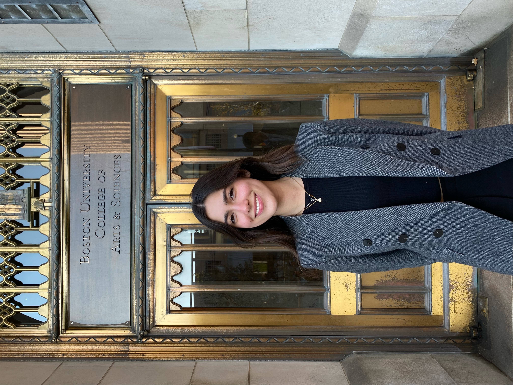

Hello! My name is Ana Julia Bortolossi and I am a senior at Boston University majoring in Computer Science and minoring in Business Administration and Management. I have worked as a course assistant at Boston University for the past two and a half years assisting both the introductory computer science class (CS111) and the computer systems class (CS210). I am currently looking for a job related to software engineering to grow my professional skills and continue my pursuit of knowledge.